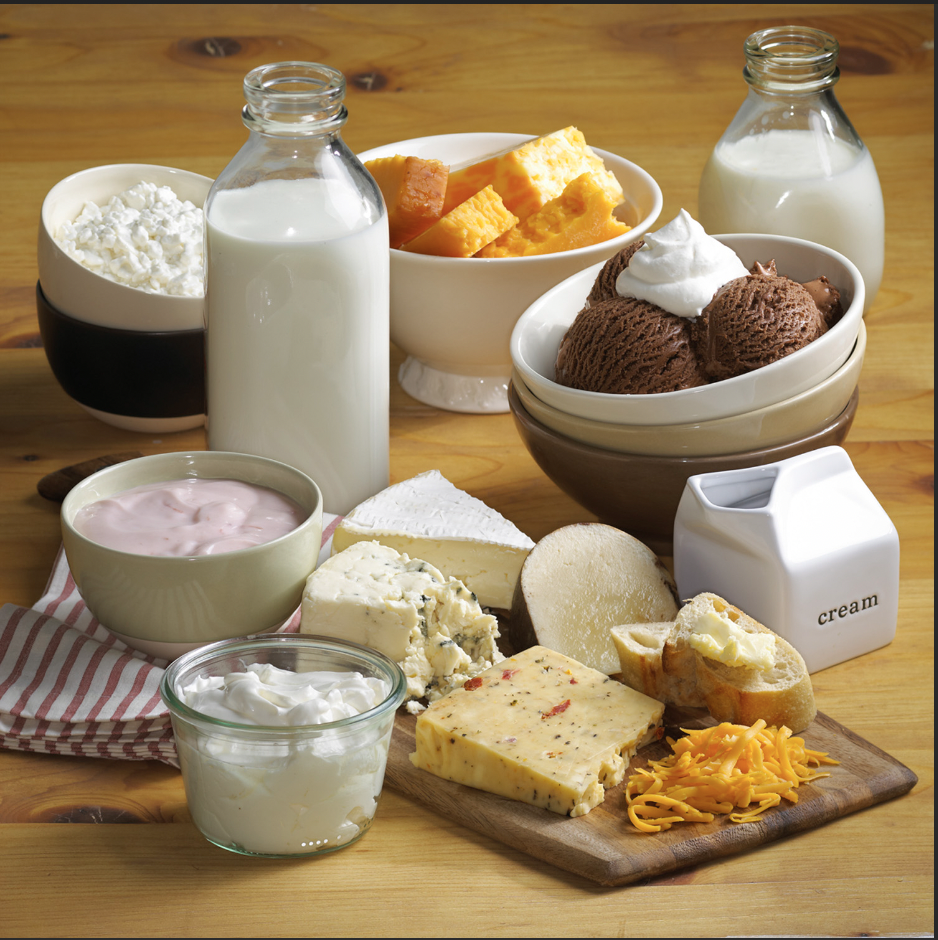
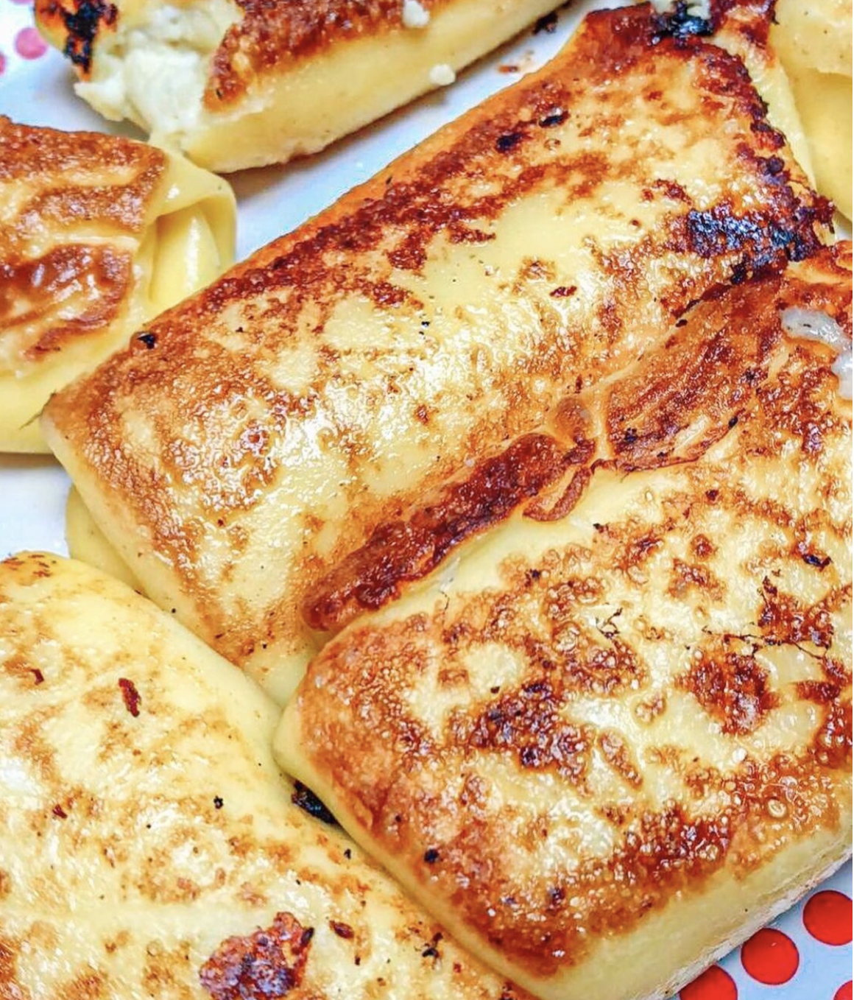
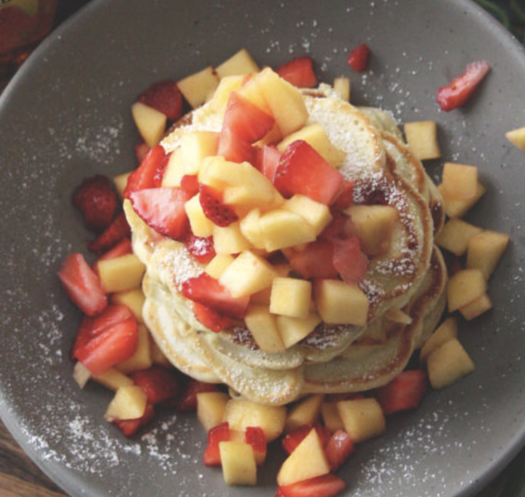
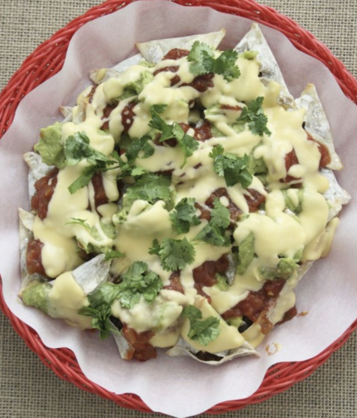
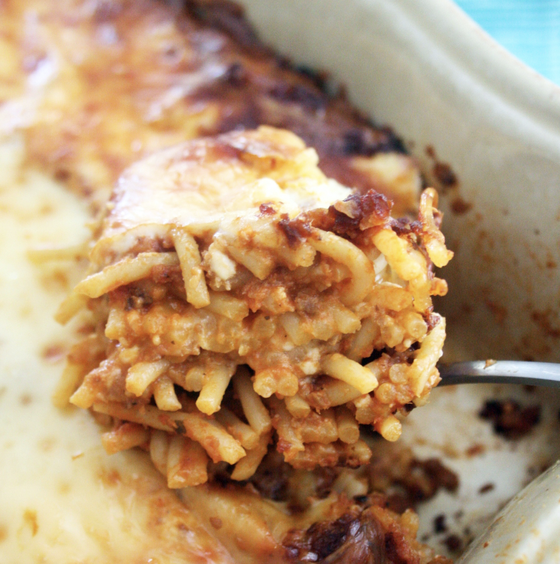

Kosher - Dairy

Kosher dairy products adhere to the dietary laws and traditions of the Jewish faith, ensuring that they meet specific criteria for consumption. These products are produced under strict supervision, following a set of guidelines that govern the entire production process—from sourcing ingredients to equipment used in processing. To be certified kosher, dairy products must be free from mixing meat and dairy ingredients, and the entire production facility must be rigorously inspected. This commitment to kosher standards not only caters to the dietary needs of the Jewish community but also reflects a dedication to maintaining the highest levels of quality and integrity in the production of dairy goods.
Molly Yeh is a Food Network host, mother, and author.

Blintzes
Pancakes
Nachos
Spaghetti